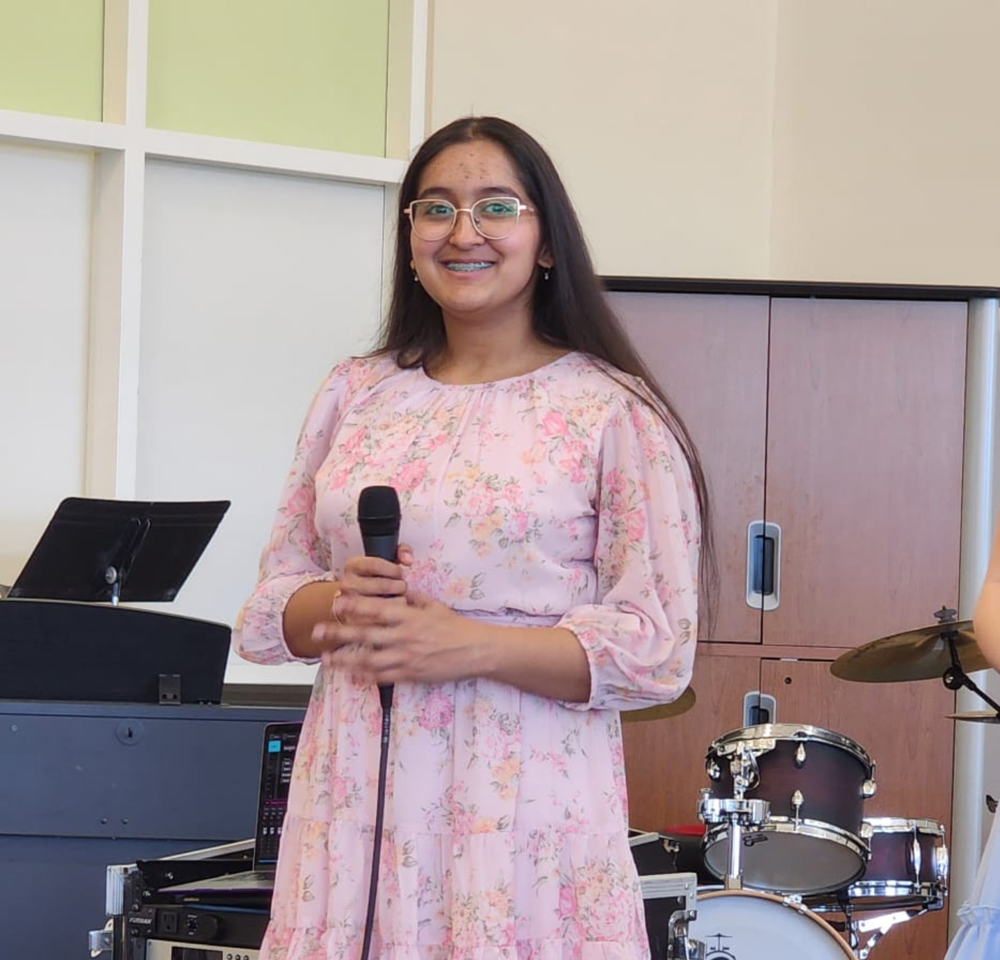
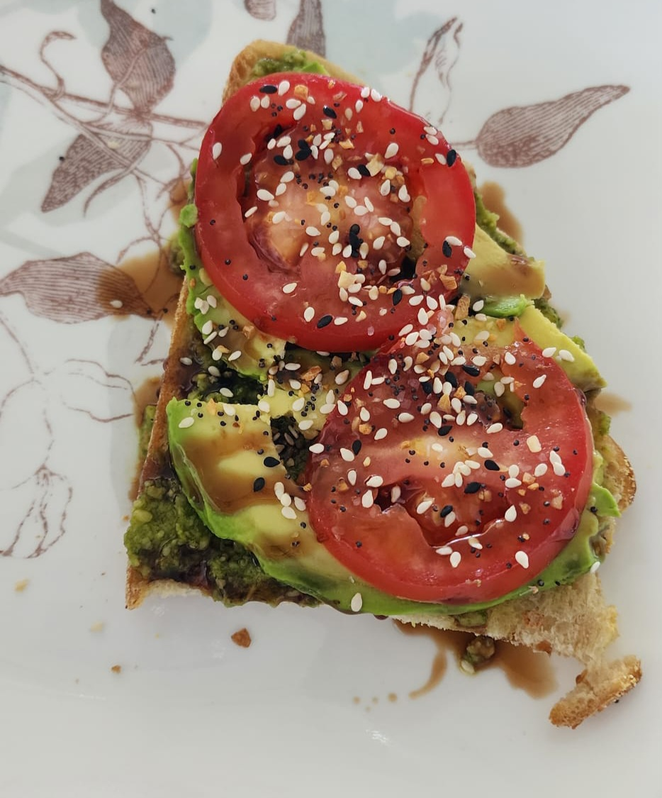
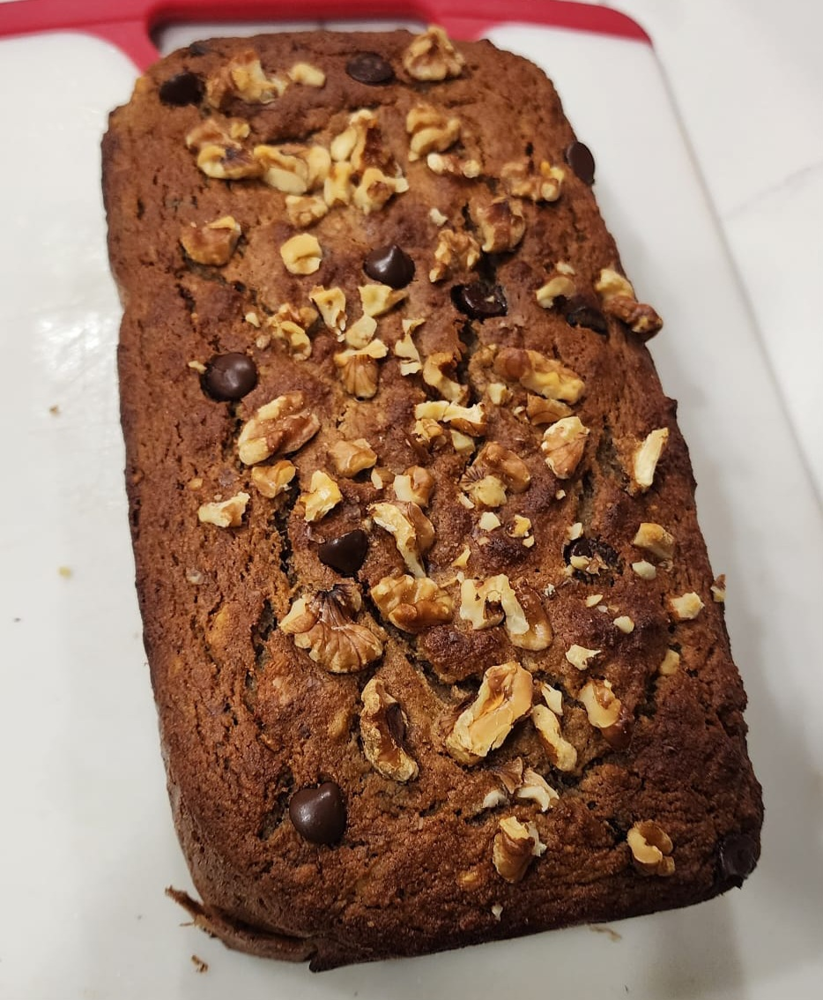
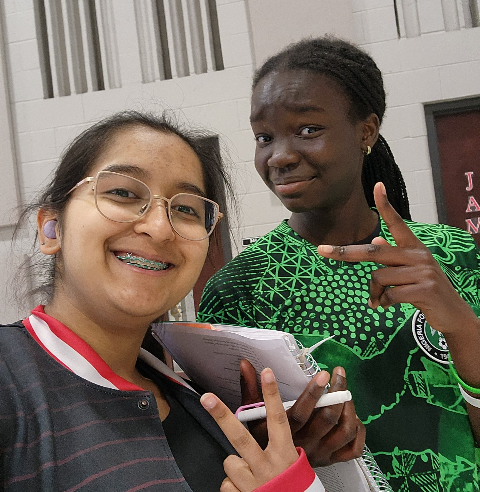
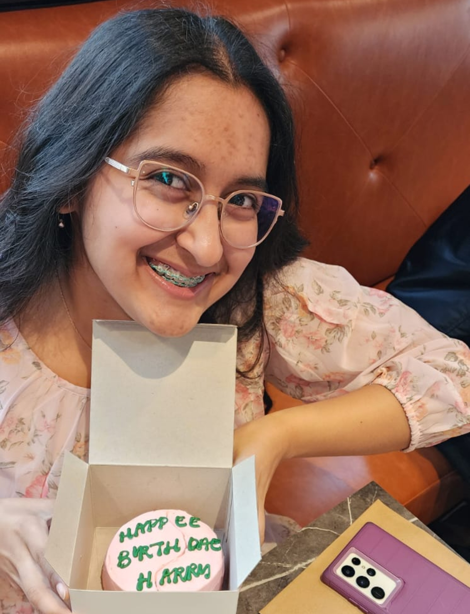

Ring Ring, Sunday’s Calling!
Sunday April 27, 2025.
I told you it was a busy weekend! I woke up again this morning, brushed out my hair because I couldn’t bear to wash it again, and got ready for Jazz Cafe. I found out on Sunday morning that I had a sixteen measure improv solo to a song in Jazz Lab Band. I woke up early enough to get some practice in, and prepared for improvisation. I met some of my friends at Jazz Cafe, and definitely enjoyed the Band performance, but then it came time for Choir. I wasn’t really worried, except for our director arriving late due to another event he had at the high school. As soon as he arrived, it was smooth sailing from there, and I left immediately after to go home. I had two hours of tutoring for French lessons after that from 4-6pm, a bunch of homework that I definitely did not leave for the last minute, some studying, that again, I definitely did not leave for the last minute, and then I went to sleep.

Small Towns
Monday April 28, 2025.
Today started out like any normal day would; I woke up, went to school, trudged through English, had normal rehearsals in band and choir, a quiz in bio, assignments in every other class, but when I got home I found out that a car had crashed into an after school building and tragedy had struck our small town. Tonight I learned something new; something that school could never teach me. Nobody in the world could come together the way a small town can. It was incredibly uplifting in a time of grief, mourning, and sorrow to see vigils, services, prayer circles, therapy groups, and more. I spent my evening at home with my parents, shaken, but with prayers for healing and hope.
For the next few days, I didn't record any pictures of events or myself because of how shaken I was, and the fact that the things that were going on in my community simply weren't mine to share. I instead recorded some meals I had - cooking and baking with my mom makes me very happy.
Coping and Prayers
Tuesday April 29th, 2025.
School got canceled today. I woke up when I felt well-rested and had breakfast with my dad - he doesn’t work on Tuesdays. My mom was at a conference that she was presenting at, so for now, it was just me and my dad. I chose to distract myself, because that’s my method of coping, and studied for final exams. While it may sound like a bad method of coping, I would like to reiterate that everyone has their own method to cope, and that’s okay. In the evening I attended a prayer circle hosted by one of my close friends at Glenwood.

I see you :)
Wednesday April 30th, 2025.
By now, more understanding had dawned on me. School was canceled until Friday, and I spent all day today studying for finals. I woke up late, prioritized rest, and kept my energy levels high to prevent any form of sickness and maximize studying as finals are rapidly approaching. Another thing I made sure to do, was check in on all my friends and contacts to make sure everyone was doing okay during this difficult time. I don’t know anyone directly involved (family or friends either), but I wanted to make sure all of the people I had access to knew that they could reach out to me if they needed to.
👏 Constant 👏 Repetition 👏
Thursday May 1st, 2025.
Today was a repeat of yesterday and Tuesday, to be completely honest. On the other hand, the amount of rescheduling that will have to happen is immense. We have a band concert, a choir concert, a band banquet, a choir banquet, a solo and ensemble masterclass, not to mention, auditions are coming up soon and surely some accommodations will have to be made. The two banquets are exactly like the Speech and Debate banquet - a time to come together, eat snacks, talk, have fun, and honor the seniors who are going off on different paths next year.


Back to Routine, Together
Friday May 2nd, 2025.
Today was our first day back at school since Monday. All of our assessments got pushed back by multiple days and today was used as a day to get back on schedule and for anything that the students needed. I’m really appreciative of how flexible and understanding Glenwood is. They had councillors available at all hours of the day, therapy dogs in the library, quiet spaces available for students who needed them, and teachers were always open to talk. The thing that makes me feel especially grateful is when a teacher goes the extra mile to talk to their class, check in with students, and acknowledge how different the rest of the school year would look. Overall, I spent the day talking to my friends, getting back into a routine, and finishing my applications for student council, choir president, and band section leader.
Happee Birthdae!
Saturday May 3rd, 2025.
Today was my 15th birthday, and instead of throwing a party this year, I went to Chicago with my parents for a weekend getaway. I (being the nerd that I am) wanted to check out the new Harry Potter store, do some shopping downtown, and have dinner somewhere out of Springfield. I grew up in big cities with my parents, New Delhi, India; Toronto, Canada; and Buffalo, New York; to name drop a few, so coming to Chatham was definitely a big change for me. I enjoyed the weekend getaway - I felt more at home in Chicago than I did in Chatham, but the weather definitely helped too. The highlight of my day was definitely the new Harry Potter store on Magnificent Mile; it was Goblet of Fire themed, and absolutely magical. Thank you for reading my blog, and I hope it helped put you at ease for high school if you’re in eighth grade, and if you’re already in or out of high school, I hope it gave you a couple laughs.
~Sharanya Sahni
